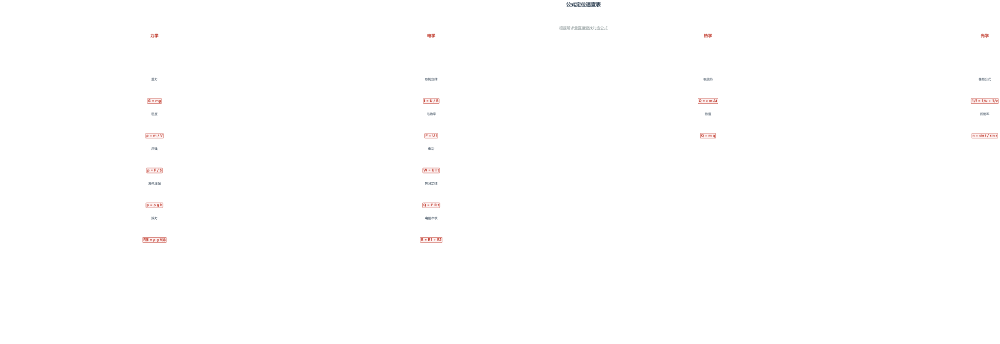
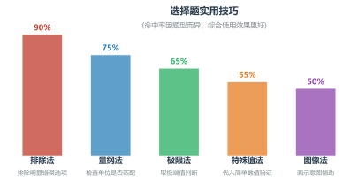

01 审题思维——读三遍法
核心原则： 题读三遍，其义自见。很多同学丢分不是因为不会做，而是因为
没看清题 。
第一遍 扫读 ——了解题目情境，判断属于力/热/电/光哪个板块。
第二遍 精读 ——圈出所有已知量、未知量、关键词（"匀速"→受力平衡，"漂浮"→F浮=G，"串联"→电流相等）。
第三遍 确认 ——确认问题问的是什么，不要答非所问。
口诀： 一扫情境二圈量，三看问题别跑偏。
例 一个质量为 50kg 的人站在水平地面上，双脚与地面的接触面积为 400cm²。求人对地面的压强。（g=10N/kg）
看解析
审题演示： 扫读： 力学题 → 求压强精读： m=50kg（已知质量），S=400cm²（注意单位！），"水平站"→F=G确认： 求压强p，用 p=F/S解： F=G=mg=50×10=500N，S=400cm²=0.04m²易错： 400cm²=0.04m²（不是0.4m²！），且双脚站立面积是两只脚的总面积。
练 一木块漂浮在水面上，排开水的体积为 200cm³，求木块受到的浮力和木块的质量（ρ水=1.0×10³kg/m³，g=10N/kg）
看答案
审题： 漂浮→F浮=G，V排=200cm³，注意单位换算。
02 模型识别——这道题在考什么
核心原则： 看到题先别急着算，先问自己"这题考什么模型"。
模型一认准，公式自然来。
中考物理常见模型速查：
模型 识别关键词 核心公式 受力平衡 静止/匀速/悬浮 F合=0 压强计算 压力/受力面积/海平面 p=F/S, p=ρgh 浮力 漂浮/浸没/排水量 F浮=ρgV排 串联电路 "串联"/电流处处相等 R总=R₁+R₂, I=U/R 并联电路 "并联"/各支路电压相等 1/R=1/R₁+1/R₂ 凸透镜成像 u>2f/f<u<2f/u<f 1/f=1/u+1/v
例 将标有"6V 3W"和"6V 6W"的两盏灯串联在 6V 的电源上，哪盏灯更亮？
看解析
模型识别： 电功率模型 串联电路模型 ，电流相等实际功率 决定解： 易错： 不要误以为额定功率大的灯在任何情况下都更亮——串联时电流相同，电阻大的实际功率反而大。
练 一个重 5N 的物体放入水中后漂浮在水面上，它排开水的体积是多少？（g=10N/kg）
看答案
模型识别： "漂浮"→浮力模型→F浮=G
03 公式定位——已知什么、求什么
核心原则： 做题时养成"三步定位"习惯——①列出已知量 ②明确目标量 ③选择连接两者的公式。
技巧 倒推法： 从问题出发往回推——"要求××，需要知道××和××，这些题目里有没有？"
技巧 单位验证： 代入数据前检查单位是否统一（如cm²→m²，g→kg）。
技巧 中间量法： 不能直接求目标时，先求中间量再代公式。
口诀： 已知条件列左边，目标写在最右边，中间公式来搭桥，单位统一是关键。

从已知条件到所求量的公式选择路径
例 一个标有"220V 100W"的灯泡接在 110V 的电路中，求它的实际功率。
看解析
公式定位三步法： ① 已知： U额=220V，P额=100W，U实=110V② 目标： P实③ 路径： 不能直接用 P=UI（因为不知道 I），需要先求 R——规律： 电压减半，功率变成原来的 1/4。
练 某电热水壶的功率为 1500W，正常工作 10 分钟消耗多少电能？合多少度电？
看答案
定位： P=1500W=1.5kW，t=10min=1/6h→W=Pt=1.5×(1/6)=0.25kWh
04 选择题技巧——不会也能拿分
核心原则： 选择题不需要写出完整过程，利用技巧可以在不完全确定的情况下锁定答案。
排除法 先排除明显错误的选项（单位不对、方向反了、明显违背物理规律），剩下的就是答案。
量纲法 检查结果的单位是否与所求物理量的单位一致。比如求压强，结果单位应该是 Pa 或 N/m²。
极限法 把某个量取极端值（0 或无穷大），看哪个选项符合实际情况。
特殊值法 代入简单数值（如 1、0、10）快速验证选项的对错。
核心原则： 宁可花 10 秒排除一个选项，也不要花 10 分钟硬算一个题。

选择题各技巧实用命中率参考
例 （多选）关于惯性，下列说法正确的是：
看解析
排除法演示： 排除A 排除B 排除C D
例 甲、乙两物体的质量之比为 3:2，吸收相同的热量后升高的温度之比为 4:3，则它们的比热容之比为：
看解析
特殊值法： A 注意： 特殊值法比直接推比例式更快、不容易出错。
练 下列做法中，为了减小压强的是：
看答案
排除法： A刀刃薄→减小受力面积→增大压强✗减小压强✓ B
05 计算题策略——步骤就是分数
核心原则： 中考物理计算题是按步骤给分的！即使算不出最终结果，写出正确的公式和代入数据也能拿到大部分分数。
必备步骤 ①
写公式 （要有原始公式）→ ②
代数据 （代入数值和单位）→ ③
算结果 → ④
写单位 → ⑤
作答
注意事项 公式要写全称（如
G=mg 而不是直接写
50×10），不要跳步，每个物理量带单位。
得分底线： 把公式写对了、数据代入对了，就算最后结果算错了，也至少能拿 60% 的分！
例 一辆质量为 1.5t 的小汽车在水平公路上匀速行驶，受到的阻力是车重的 0.05 倍。求：
看解析
满分步骤演示（6分）： 已知： m=1.5t=1500kg（单位换算！），g=10N/kg，f=0.05G（1）求重力 G 解： 公式：G=mg ··············· ① 写公式（2分）（2）求牵引力 F 答： 汽车重力为 15000N，牵引力为 750N。（0.5分）总得分：6分 ✓
例 如图，R₁=10Ω，R₂=20Ω，电源电压为 6V。求：
看解析
关键策略： 即使忘记串联分压公式，第一步写对欧姆定律也能拿分。（1）求电流 I （2）求 U₂ 答： 电路中电流为 0.2A，R₂两端电压为 4V。注意： 即使第（2）问不会，第（1）问的结果在（2）中可以直接用，不要重复计算。
练 将质量为 2kg 的水从 20°C 加热到 100°C，求水吸收的热量。[c水=4.2×10³J/(kg·°C)]
看答案
标准步骤： 已知： m=2kg，t₀=20°C，t=100°C，c=4.2×10³J/(kg·°C)公式： Q=cmΔt=cm(t-t₀) ······ 写原始公式 ✓代入： Q=4.2×10³×2×(100-20) ·· 代数据 ✓结果： Q=6.72×10⁵J ················· 结果+单位 ✓答： 水吸收的热量为 6.72×10⁵J。
06 实验探究题套路——万变不离其宗
核心原则： 实验题看似灵活，但出题角度有规律可循。掌握常见题型，实验题不再是失分重灾区。
实验原理题 实际是"用公式解释实验"——实验依据什么物理原理？步骤设计题 注意操作顺序的合理性——先调节、再测量、后处理。数据分析题 描点→连线→找规律——多练几个就能掌握。误差分析题 常见套路：测量工具精度不够、操作不规范、忽略摩擦/热损失等。
例 在"测量小灯泡额定功率"的实验中，小灯泡标有"2.5V"字样：
看解析
（1）实验原理： P=UI。用电压表测灯泡两端电压，用电流表测通过灯泡的电流，计算出功率。（2）操作规范： ①开关应断开 （防止短路）；②滑动变阻器应调到阻值最大处 （保护电路）。（3）故障分析： 电流表有示数说明电路通 （没有断路），电压表示数为零说明灯泡两端没有电压 ，最可能的原因是灯泡短路 （电压表被短路）。答题套路： 实验题要记住"三步走"——原理、操作、分析，每一问都有对应的固定套路。
例 小明用天平和量筒测量某金属块的密度：
看解析
（1）天平调平： 指针偏左 → 左边重 → 平衡螺母向右 旋（左偏右调）。（2）密度计算： V=40-30=10mL=10cm³，ρ=m/V=78/10=7.8g/cm³（可能是铁，与铁的密度接近）（3）误差分析： 先测体积后测质量 → 金属块沾水 → 质量偏大 → ρ=m/V → 密度偏大 。易错提醒： 误差分析题要说明原因，不能只说"偏大"或"偏小"。
练 在"研究滑动摩擦力大小与哪些因素有关"的实验中：
看答案
（1） 匀速拉动时木块受力平衡，拉力等于摩擦力，通过拉力大小间接知道摩擦力大小。（2） 说明接触面粗糙程度相同时，压力越大，滑动摩擦力越大 。答题思路： 实验原理题→用物理规律解释操作；数据分析题→控制变量法描述结论。